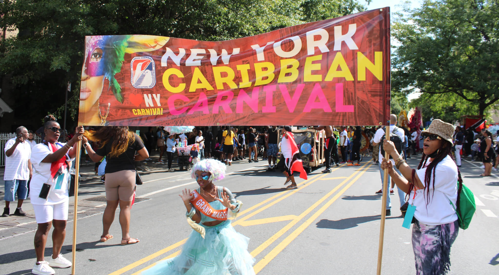

Top Five News Headlines of the Week

- Climate justice advocate Svaha Williams grand marshal of Junior Parade -Caribbean Life
- Cloud of Colonialism Hangs Over Queen Elizabeth's Legacy in Africa -CNN
- A Black pastor sues the police who arrested him while watering his neighbors' flowers -NPR
- After an Arsenic Scare, City Says a Housing Complex Water Is Safe - The New York Times
- Massive 7.6 earthquake rocks Papua New Guinea -CNN